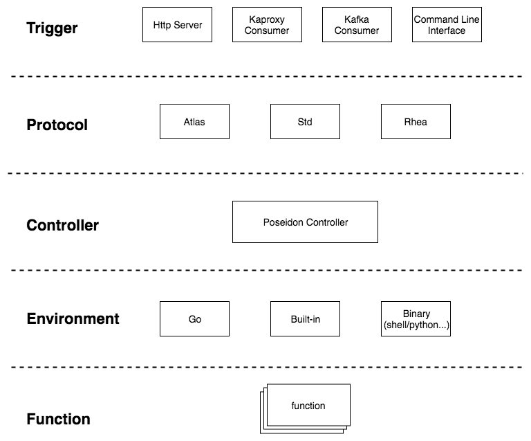

一、背景
云处理平台，是公司基于私有云存储打造的一个针对图片、视频进行格式转换、裁剪、转码以及许多自定义操作的平台，类似于七牛云的多媒体API、阿里云的智能媒体管理。全量支持了公司所有图片及视频的处理。
最早的时候，云处理平台和云存储是一起诞生的，是作为云存储的一个子项目，在同一套系统中实现。虽然部署的时候是按照上传、下载、处理分集群进行部署，但是随着功能性的提升，项目代码越来越复杂，部署的成本也逐渐升高。因此我们进行了第一次重写，将其独立了开来，但仍旧是使用Java+Tomcat的方式部署在物理机上。
2018年初，随着业务的发展，云处理平台遇到了许多瓶颈和痛点。其中最为明显的是：
- 新增一个处理接口的成本过高，这里的成本主要指上线及部署成本，需要由运维同学发布到每一台处理集群的物理机（那时我们已经实现了新增一个处理接口只需要编写处理脚本即可，不需要改动到Java代码，类似于Faas中的 『开发人员只需要关注功能代码的开发』 ）。
- 集群难以继续细分。由于面对公司很多产品，每个产品使用的处理接口不尽相同，且各接口的复杂度差异也很大（例如视频转码接口耗时是十秒级别，而大部分图片处理接口耗时是百毫秒级别）。由于都是重CPU操作，因此当集群负载高时，各接口可能互相影响，导致响应时间变慢。
- 云处理平台只支持同步请求，异步处理的方式是通过部署一个队列处理机来消费队列，解析队列中的消息再通过Http请求云处理平台，得到处理结果后，再回调业务方。整个流程变长，增加了部署管理成本，也更加的不可控。
- 集群扩容缩容麻烦。当业务上要进行推广时，只能由运维手动加入机器到集群，部署云处理服务，缩容也是一样。虽然后来有了自助上线平台，但成本依然较高，部署耗时长，风险大。
- 机器使用率无法很好的利用。由于是物理机部署，扩容缩容成本高，因此为了服务的可用性，必须要保证集群有较多的冗余，防止峰值流量将集群打垮的情况。
- …
适时正好Faas非常流行，公司也正在推进容器化，因此我们便又进行了新的一次重构，以Faas的思想实现了目前的云处理平台。
二、前期调研
前期调研了 fission 和 kubeless 两个开源的faas项目。两者都是基于k8s实现。调研时，fission的实现更为完善一些，所以侧重看了一些fission的源码。
fission的实现是通过trigger层来接受event，再通过http请求router层映射到对应的function，获取或启动对应的pod来处理这个event。其中trigger层类似于http服务器，或者队列处理机，router层担任的角色类似于API网关。而function层则是真正执行任务的地方，其事先由poolManager根据不同environment（go/binary/python…）启动pod，pod对router层暴露http端口。当router层收到一个event时，根据url映射到对应function，再找到可以处理该event的pod（如果没有则立即创建，冷启动时间为100ms，pod启动时是没有function代码的，需要到etcd中拉取function代码，因此也限制了代码的大小必须在1MB内），最后将event通过http请求到可以执行的pod中。
那么fission适合我们云处理平台的场景吗？其实并不契合的。主要有几点：
- 代码大小的限制，由于云处理除了一些简单的脚本外，有的脚本还需要依赖一些素材等资源文件，这些都属于function的一部分，这些的体积基本都会>1MB。
- function pod统一暴露的都是http服务，虽然trigger层有支持mqtrigger（类似于队列处理机），但一些视频转码的请求一般需要几十秒甚至分钟级别，通过保持http连接进行通信不够可靠。
- function代码是pod启动的时候临时拉取的。同第一点，云处理的function体积较大，启动时再拉取一个是影响冷启动时间，一个是会对带宽造成额外压力。
不是fission不好，而是因为云处理本身的场景就不在fission的考虑范围内，fission更倾向于支持的是小型、快速、生命周期短的function，例如一些解耦的非常干净的http处理函数。这也是AWS Lambda中的主要业务形态。
通过fission，我们也大概明白了faas的实现方式，参考了许多设计的方式，并实现了云处理平台的Faas系统 – Trident 和 Poseidon。
其中Trident是函数管理系统，类似于fission中的controller。用于管理函数，发布服务，弹性扩缩容（HPA）。
Poseidon 则是运行时，包含trigger，environment，function等运行模块。本文也会着重介绍Poseidon
三、Poseidon
3.1 基本结构
Poseidon 的基本结构如下：

1. Trigger
trigger层作为最上层，直接与前端交互，负责前端消息的接受和响应。这边的前端消息是指例如Http Request、消息队列中的消息。前端响应指例如Http Response、回调等。 目前Trigger层有4种实现：
- Http Server
- Kaproxy Consumer
- Kafka Consumer
- Command Line Interface
2. Protocol
protocol层负责对前端消息的内容进行解析，构造成标准输入。将标准输入传递给Controller层进行下一步处理，之后解析Controller层响应的标准输出，构造成Trigger层的响应并返回给Trigger层。
Protocol interface {
// 解析Http Request，并传递给Controller层处理。将处理结果转换为response返回
HttpParse(ctx context.Context, r *http.Request) response.Response
// 解析Message, 并传递给Controller层处理。将处理结果转换为QueueResult返回。
QueueParse(ctx context.Context, msg []byte) *QueueResult
}
3. Controller
controller层负责一些通用事件的处理。目前实现了：
- 根据函数配置，预下载待处理文件
- 控制函数管道的流程。在带有管道参数的处理请求中，将上一个函数的输出作为输入传递给下一个函数。
4. Environment
environment 层负责函数（function）文件的调用。例如进程外执行可执行文件型函数，如shell、python脚本。进程内通过plugin的方式调用go的so库。目前提供了三种实现：
- binary
使用进程外的方式，调用可执行文件，如shell、python脚本，二进制文件等。 - go
使用进程内的方式，加载golang编写的so库。 - built-in
poseidon默认代码内支持的一些函数，例如saveas。
5. Function
该层即由函数开发者开发的函数文件，独立于poseidon项目。
3.2 运行方式
Poseidon最终交付的是一个镜像，镜像中包含基础的运行环境、Poseidon可执行文件、需要的Function文件以及一些配置。Poseidon启动的时候，根据配置决定使用哪个trigger，如果是http则对外暴露http端口，是kafka则会消费kafka队列。之后根据trigger传来的event执行后续操作。这是Faas中的Runtime模式，函数常驻内存。
因此，最终云处理平台的部署方式变成：
- 在Trident选择需要的处理Function，构建成一个服务，同时也会自动构建该服务对应的docker镜像，之后会自动在k8s集群上部署该服务，并根据cpu使用率等指标进行弹性扩缩容（HPA）。
- 如果需要更新或新增某个Function，则在trident上升级需要升级的服务，同时也会自动打包新的镜像。
- 由于一般更新函数的内容不会太多，因此利用docker build 缓存的特性，构建镜像及node拉取镜像的耗时都极短。Golang的服务冷启动也非常的快，基本都在毫秒级别。因此Pod的冷启动时间基本都能控制在秒级别，虽然达不到Faas标准的20ms冷启动时间，但在云处理的场景已经可以很好的满足需求。
也解决许多痛点：
- 轻松部署多个服务对应云处理的多个集群，进行资源上的隔离。
- 在业务量级突增的情况下，可以利用HPA自动扩容，无需人工干预，也无需提前部署做大量冗余。
- 在不影响服务质量的前提下，提升了机器的利用率。
- 支持多种事件模型，如Http、Pub/Sub
- 可以利用方便的集群部署，实现错峰调度，将一些优先级低的任务放置业务低峰期执行。
- 使用原先一半的机器，支持了原先接近两倍的业务量。
四、总结
虽然Poseidon的实现不是完全意义上的Faas，但其基本满足了Faas个几个核心点：
- 开发人员只需要关注功能代码的开发。降低了开发成本。
- 提升了资源的利用率。并实现了资源隔离。
- 事件驱动。满足更多场景。
- 将日志收集、监控、报警等配套设施让渡给Faas平台统一处理，降低了运维成本。
本文地址